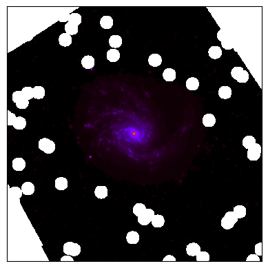
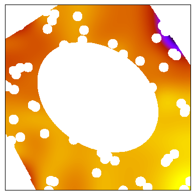
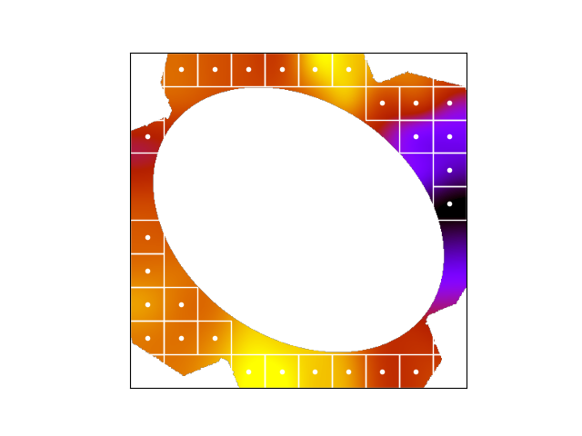
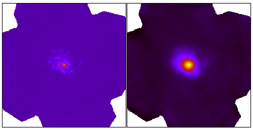
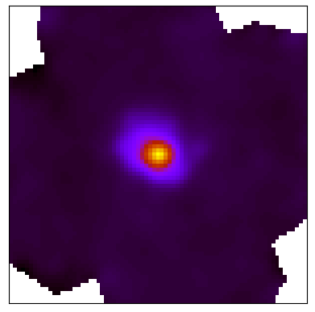
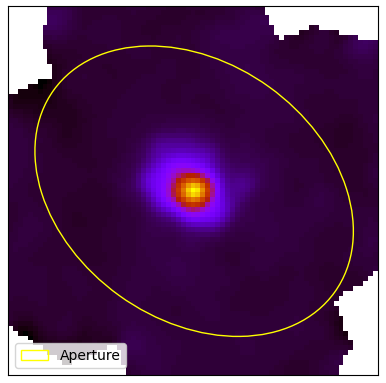

|
Homogenization example with HIP |
HIP pipelines and data sources are defined in a configuration file using YAML, a human-readable data serialization language. Once a configuration file is defined, HIP is launched as follows:
python main.py --file [config file]
HIP configuration files consist of the following main sections: meta, config, data, and pipeline.
Meta
The meta section is used to define meta-data. Fields in meta are not mandatory. Elements not defined by the user will default to "Default". Elements of this section will be used for logging purposes. The meta section is defined by two fields: name, and description.
name:
Defaults to Default
* Type: string
* Description: Name of pipeline
description:
Defaults to Default
* Type: string
* Description: Description of pipeline
|
meta: name: HIP description: PACS1 and MIPS1 to SPIRE3 for M99 |
Config
The config section is used to define the run mode. Modes define whether or not to propagate uncertainties, and if yes, how to do so. The config section is defined with two fields: mode, and niter.
mode:
* Type: Literal string (Single Pass, Monte-Carlo, Analytic).
* Description: Single Pass mode does not propagate uncertainties, Monte-Carlo mode propagates uncertainties using a Monte-Carlo loop, Analytic mode propagates uncertainties analytically. For more information on the Analytic method, see also the blog on error propagation through data pipelines.
niter:
* Type: Positive integer.
* Description: Number of iterations for "Monte-Carlo" mode.
|
config: mode: Monte-Carlo niter: 10000 |
Data
The data section is used to define the astronomical body and the bands used for the pipeline. The data section is defined with three fields: body, geometry, and bands.
body:
* Type: String
* Description: Name of astronomical source.
|
data: body: NGC4254 |
The geometry and bands fields are by themselves other sections within the data section.
ra:
Defaults from DustPedia Aperture Photometry 2.2 - ra
* Type: Float
* Description: Right ascension in degrees.
dec:
Defaults from DustPedia Aperture Photometry 2.2 - dec
* Type: Float
* Description: Declination in degrees.
positionAngle:
Defaults from DustPedia Aperture Photometry 2.2 - pos_angle
* Type: Float
* Description: Position angle in degrees.
axialRatio:
Defaults from DustPedia Aperture Photometry 2.2 - axial_ratio
* Type: Float
* Description: Axial ratio.
semiMajorAxis:
Defaults from DustPedia Aperture Photometry 2.2 - semimaj_arcsec
* Type: Float
* Description: Semi-major axis in arcseconds.
inclination:
Defaults from Duspedia HyperLEDA - incl
* Type: Float
* Description: Inclination in degrees.
radius:
Defaults from DustPedia HyperLEDA - d25
* Type: Float
* Description: Major axis isophote at which optical surface brightness falls beneath 25 mag arcsec−2, in arcseconds.
distance:
Defaults from DustPedia HyperLEDA ned_dist_z_corr
* Type: Float
* Description: Distance in Mega parsecs.
|
data: geometry: ra: 184.70655 dec: 14.41641 positionAngle: -35.744970233 axialRatio: 1.34709868225 semiMajorAxis: 421.336905129 inclination: 20.1 radius: 39.70507919 distance: 5.9 |
input:
* Type: String
* Description: Relative path towards input data fits file.
output:
* Type: String
* Description: Relative path towards output directory.
error:
* Type: String
* Description: Relative path towards input error fits file.
name:
* Type: Literal string
* Description: Name of band following HerBIE nomenclature.
calError: (Defaults to value from DustPedia)
* Type: Float
* Description: Photometric calibration error in percentage.
|
data: bands: - input: data/inputs/NGC4254/NGC4254_PACS1.fits error: data/inputs/NGC4254/NGC4254_PACS1_Error.fits output: data/outputs/NGC4254/ calError: 5.4 name: PACS1 - input: data/inputs/NGC4254/NGC4254_MIPS1.fits error: data/inputs/NGC4254/NGC4254_Spitzer_24_Error.fits output: data/outputs/NGC4254/ calError: 5 name: MIPS1 |
Pipeline
The pipeline section is used to define the homogenization pipeline. The pipeline section is defined with three fields: step, diagnosis, and parameters.
step:
* Type: Literal string (hip.cutout, hip.foregroundMask, hip.skySubtract, hip.degrade, hip.regrid, hip.integrate)
* Description: Name of step.
diagnosis:
* Type: Boolean
* Description: Enable/Disbale debug messages and diagnosis plots.
The parameters section is by itself another section within the pipeline section. The parameters section is defined with different fields for each choice of step. The following are the possible fields of parameters for each step:
This step allows to perform a cutout the data centered at ra, dec as defined in geometry. This step is defined with three fields: band, raTrim, and decTrim.
band:
* Type: Literal string
* Description: Name(s) of input band(s), all if all of them.
raTrim:
* Type: Float
* Description: Size of the cutout along the x axis in arcminutes.
decTrim:
* Type: Float
* Description: Size of the cutout along the y axis in arcminutes.
|
pipeline: - step: hip.cutout diagnosis: True parameters: - band: all raTrim: 15 decTrim: 15 |
|
Cutout example for PACS1 image of NGC4254. The cutout region was defined to be 15x15 arcmins as shown in the example above. |
This step allows to mask foreground objects within a specific area centered at ra, dec as defined in geometry. This step is defined with four fields: band, raTrim, decTrim, and maskFactor.
band:
* Type: Literal string
* Description: Name(s) of input band(s), all if all of them.
raTrim:
* Type: Float
* Description: Size of the area along the x axis in arcminutes.
decTrim:
* Type: Float
* Description: Size of the are along the y axis in arcminutes.
maskFactor:
Defaults to 1.0
* Type: Float
* Description: Factor multiplier for mask radius.
|
pipeline: - step: hip.foregroundMask diagnosis: True parameters: - band: MIPS1 raTrim: 15 decTrim: 15 maskFactor: 1 |
|

Foreground masking for MIPS1 image of NGC4254. The foreground masking was defined to be 15x15 arcmins with a maskFactor of 1 as seen in the example above. |
More details on the choice of maskFactor:
The maskFactor scales the size of the masked regions around foreground sources. It multiplies the base radius corresponding to the object's magnitude as seen in the following table. This is useful to adjust how aggressively pixels near these objects are masked.
| Magnitude Threshold | Base radius (arcseconds) |
|---|---|
| <13.5 | 4.6 |
| <14.0 | 3.0 |
| <15.5 | 2.1 |
| <16.0 | 1.4 |
| <18.0 | 1.15 |
| <40.0 | 0.7 |
This step allows to estimate and subtract the background from the data. The background is estimated using 3 sigma-clipped statistics in each box of a grid that covers the data. The high-resolution background map is then calculated by cubic interpolation of the low-resolution background map. This step is defined with two fields: band, and cellFactor.
band:
* Type: Literal string
* Description: Name(s) of input band(s), all if all of them.
cellFactor:
* Type: Positive integer
* Description: Factor multiplier for grid size.
|
pipeline: - step: hip.skySubtract diagnosis: True parameters: - band: all cellFactor: 10 |
 Sky subtract mask and background interpolation for PACS1 image of NGC4254.  Sky subtract mask for MIPS1 image of NGC4254. In that case, the sky subtraction is done after foreground masking for MIPS1. |
More details on the choice of cellFactor:
The background interpolation operation is done with the Background2D object from photutils. First, a low-resolution background map is estimated within boxes of a grid, and then interpolated to create the final background map to be subtracted. The cellFactor is an integer multipler factor of the instrument's resolution per box of the grid. A larger cellFactor results in larger boxes, and therefore a coarser grid. A fine grid is not necessarily the optimal choice, as one would want to interpolate the background while also capturing its large-scale structure. We recommend selecting the cellFactor such that the box size matches the scale of the galaxy.
|
 Grid structure corresponding to a cellFactor of 10 for PACS1. In that case, every box is 23 pixels wide or 46 arcseconds. |
This step allows to degrade an image to a target lower resolution. The step can be done either by providing a kernel to be applied, or by specifying the target resolution. The first method allows the user to use a specific kernel for the degradation, whereas the second method constructs a Gaussian kernel with the correct full-width-half-maximum to degrade the image to the target resolution. This step can be defined with three fields: band, target, and/or kernel.
band:
* Type: Literal string
* Description: Name(s) of input band(s), all if all of them.
kernel:
* Type: String
* Description: Relative path towards kernel FITS file.
target:
* Type: Positive integer
* Description: Target resolution in arcseconds.
|
pipeline: - step: hip.degrade diagnosis: True parameters: - band: PACS1 kernel: kernels/Kernel_LowRes_PACS1_to_SPIRE3.fits - band: MIPS1 kernel: kernels/Kernel_LowRes_MIPS1_to_SPIRE3.fits |
|

Degradation from PACS1 with a resolution of 9 arcseconds to SPIRE3 with resolution of 36 arcseconds for NGC4254. |
This step allows to reproject an image to a target WCS projection. This step can be defined with two fields: band, and target.
band:
* Type: Literal string
* Description: Name(s) of input band(s), all if all of them.
target:
* Type: String
* Description: Relative path towards a target FITS file.
|
pipeline: - step: hip.regrid diagnosis: True parameters: - band: all target: data/inputs/NGC4254/NGC4254_SPIRE3.fits |
|

Result of regridding PACS1 with pixel size 3 arcseconds to a pixel size of 12 arcseconds as of SPIRE3 for NGC4254. |
This step allows to perform aperture photometry over an elliptical aperture defined by the semi-major axis of the galaxy. This step can be defined with two fields: band, and sizeFactor.
band:
* Type: Literal string
* Description: Name(s) of input band, all if all of them.
sizeFactor:
Defaults to 1.0
* Type: Float
* Description: Factor multiplier for size of aperture.
|
pipeline: - step: hip.integrate diagnosis: True parameters: - band: all sizeFactor: 1 |
|

Elliptical aperture with sizeFactor of 1 to perform aperture photometry on PACS1 image of NGC4254. |
|
meta: name: HIP description: PACS1 and MIPS1 to SPIRE3 for M99 config: mode: Monte-Carlo niter: 10000 data: body: NGC4254 bands: - input: data/inputs/NGC4254/NGC4254_PACS1.fits error: data/inputs/NGC4254/NGC4254_PACS1_Error.fits output: data/outputs/NGC4254/ calError: 5.4 name: PACS1 - input: data/inputs/NGC4254/NGC4254_MIPS1.fits error: data/inputs/NGC4254/NGC4254_Spitzer_24_Error.fits output: data/outputs/NGC4254/ calError: 5 name: MIPS1 pipeline: - step: hip.cutout diagnosis: True parameters: - band: all raTrim: 15 decTrim: 15 - step: hip.foregroundMask diagnosis: True parameters: - band: MIPS1 raTrim: 15 decTrim: 15 - step: hip.skySubtract diagnosis: True parameters: - band: all cellFactor: 10 - step: hip.degrade diagnosis: True parameters: - band: PACS1 kernel: kernels/Kernel_LowRes_PACS1_to_SPIRE3.fits - band: MIPS1 kernel: kernels/Kernel_LowRes_MIPS1_to_SPIRE3.fits - step: hip.regrid diagnosis: True parameters: - band: all target: data/inputs/NGC4254/NGC4254_SPIRE3.fits - step: hip.integrate diagnosis: True parameters: - band: all |